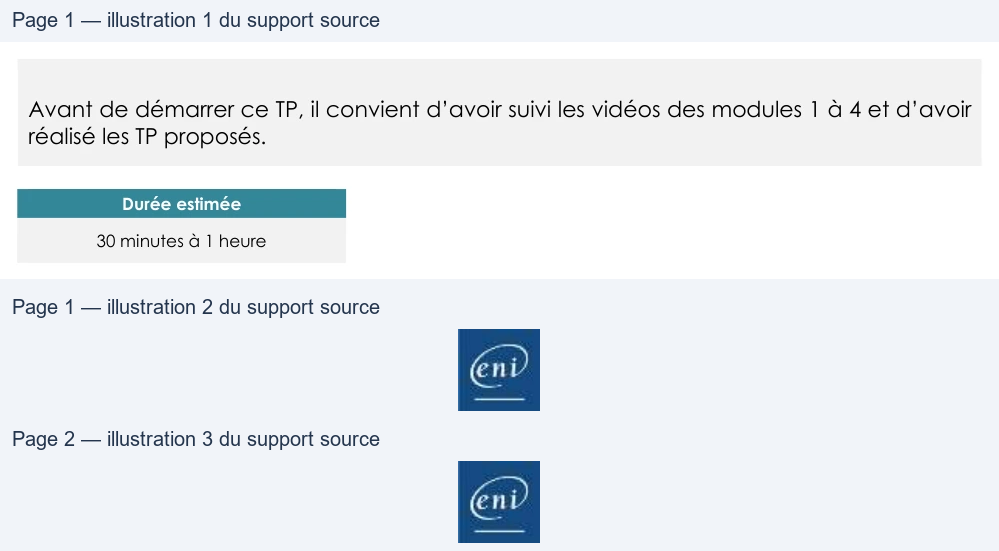

Transcription du document du Drive TSSR. La mise en forme est adaptée au Web ; les compléments IA du portail sont présentés séparément.
Administration Debian GNU-Linux
TP du Module 04 – Debian en mode maintenance
Avant de démarrer ce TP, il convient d’avoir suivi les vidéos des modules 1 à 4 et d’avoir
réalisé les TP proposés.
Durée estimée
30 minutes à 1 heure
I.
Sur le serveur Debian sans environnement graphique
Utiliser le menu GRUB pour démarrer le serveur en mode maintenance et sans avoir besoin
de s’authentifier avec le mot de passe de root (voir support de cours)
•
Activer l’écriture sur la partition racine.
•
Pouvez-vous créer un fichier dans l’espace personnel du compte root ?
•
Pouvez-vous accéder au répertoire personnel de l’utilisateur créé à l’installation ?
•
Est-ce normal ?
II.
Sur le serveur Debian avec environnement graphique
Démarrer dans le "Rescue mode" (dans "Advanced options") à partir de l'ISO d'installation
Debian* :
•
Sélectionner la langue, le nom (comme lors d'une installation)
•
Sélectionner le système de fichiers racine à monter
Accéder au fichier /etc/passwd sur votre disque dur.
•
Pouvez-vous le modifier ? (attention à ne rien casser !!)
•
Avec quel utilisateur êtes-vous connecté ?
•
Avez-vous indiqué un mot de passe ?
Pour démarrer depuis le CD, appuyez sur la touche "Echap" lors de l'affichage du logo
VMware au démarrage du système.
Page 1/2
© ENI – Tous droits réservés
BE
Administration Debian GNU-Linux
Attention, pensez à faire le "focus" sur votre VM en cliquant dans la fenêtre console afin
que la touche "Echap" soit bien prise en compte par votre VM (et non par votre poste
physique.)
En cas de redémarrage, pensez à connecter votre CDROM
Une solution est proposée pour ce TP sous la forme d'un PDF commenté, disponible dans les
ressources à télécharger.
Page 2/2
© ENI – Tous droits réservés
